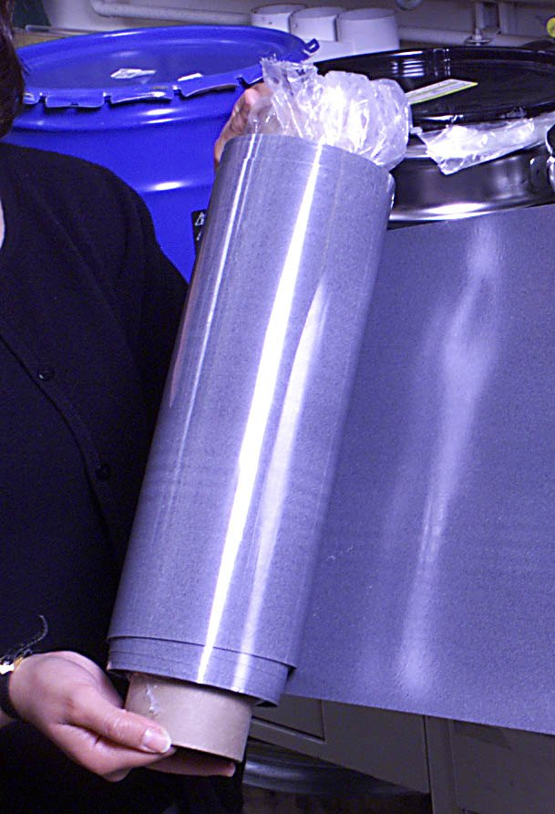

The Paper That Remembers Its Own Image
Nicholas Sheridon's Gyricon at Xerox PARC set millions of microscopic black-and-white beads loose inside a sheet of rubber, then asked a voltage to tumble them into a picture. The beads stopped, and the picture stayed — because this output wasn't trying to be a screen. It was trying to be paper.
Every screen in this museum has a temper. A Talaria paints its image with oil and light and forgets it a thirtieth of a second later. A Commodore 1520 finishes a drawing and hands you a sheet of ink to protect from the world. Even the Ferranti-Packard flip-disc, the display that remembered itself, holds its picture by flipping little discs over like dominoes — each one a yes or a no that stays put because it's been physically turned.
And then there is the one output in the museum that never tried to be a display at all.
In the mid-1970s, Nicholas Sheridon at Xerox PARC built a sheet of transparent silicone rubber and filled it with millions of microscopic plastic beads — each one half white, half black, floating in its own little bubble of oil so it was free to spin. He called the thing Gyricon, from the Greek gyros, "to turn." When a voltage swept across the sheet, every bead tumbled in its pocket to present one side or the other. A pattern of voltages arranged the beads into letters and pictures. Then the voltages stopped.
And the picture stayed.

Not a screen, a page
Here is the thing Sheridon was trying to make: not a display, but paper. Gyricon was designed to be thin, flexible, unbreakable, and readable in bright ambient light — sun on the beach, a bedside lamp, no backlight, no phosphor, no refresh scan. The beads were drawn to a picture once and then simply stopped turning. It is the closest thing in this museum to a book that can rewrite itself, and the direct physical ancestor of every e-reader you have ever held.
Compare that to what most computer output is. A Honeywell Visicorder burns a trace because it wants to show you what a signal was doing right now. A Solari split-flap drops a letter onto a drum. A flip-disc flips its discs. Each of these is a machine that drew you something and then, at best, held its breath until the picture changed.
Gyricon never held its breath. It had no refresh to lose. The picture wasn't painted and maintained — it was assembled once, physically, by beads that decided which color to show and then committed. The image didn't need a scan, an electron gun, or a pen. It needed nothing. The sheet remembered its own image because the image was the arrangement of the beads, and the beads were the sheet.
The medium is the interface
That is what makes Gyricon the cleanest realization of "the medium is the interface" in the entire output family. A CRT is a vacuum tube with a story to tell. A plotter is a conveyor for a pen. A flip-disc is a toggling curtain. Gyricon is neither a machine nor a canvas — it is a substrate, and the substrate is the output. The beads don't display the information; they become it. Hold up the sheet and the information is right there in the material, exactly as a printed word sits in the ink of a page, exactly as a photograph sits in the silver of the paper.
Sheridon's project never conquered the world on its own terms — it was spun out and later largely superseded by the electrophoretic ink we call E Ink, which shares Gyricon's core premise of physically rearranging charged particles into a persistent image. But that premise is the quiet revolution. Every Kindle, every e-reader, every display that asks to be read in sunlight rather than watched in the dark, owes its body to this sheet of rubber full of spinning beads.
The rest of the museum's outputs have an opinion about your attention. Gyricon is the one that just sits there — a page, holding its image, waiting to be read. It is the only computer output that could plausibly be rolled up and stuck in a bookcase and forgotten, and still remember exactly what it was showing when you come back for it.